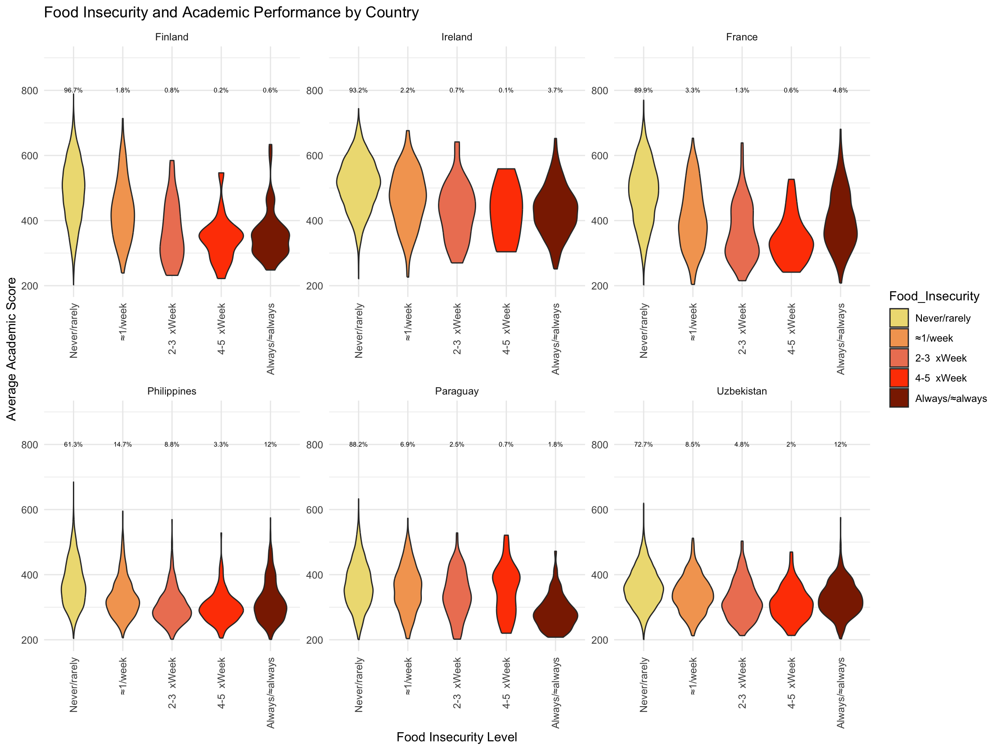

For a long time, I have been interested in understanding how students access the school system, the conditions under which they learn, and how their backgrounds and daily experiences outside of school shape their overall learning journeys. I was a teacher for 2 years in La Guajira, Colombia, and often saw students arriving at school without having had a meal and relying on the school meal as their source of nourishment.
This is why I was interested to see how food insecurity impacts academic performance. In the PISA study (OECD 2022), food insecurity was measured by asking students: In the past 30 days, how often did you not eat because there was not enough money to buy food? While these are self-reported responses and may have limitations, they can still provide meaningful insights.
I focused on analyzing data from six countries, selected based on the 2022 Global Food Security Index, which scores countries on food affordability and availability. Three of these countries (Finland, Ireland, and France) had high food security scores above 80 points, while the other three (Philippines, Paraguay, and Uzbekistan) had lower scores below 60 points.
library(arrow)library(tidyverse)PISA_2022 <-read_parquet("/Users/k1765032/Library/CloudStorage/GoogleDrive-richardandrewbrock@gmail.com/.shortcut-targets-by-id/1c3CkaEBOICzepArDfjQUP34W2BYhFjM4/PISR/Data/PISA/2022/PISA_student_2022_subset.parquet")PISA_2022 <- PISA_2022 %>%#Average reading, math and science scores for each studentmutate(Average_Score =rowMeans(select(., PV1MATH, PV1SCIE, PV1READ), na.rm =TRUE))#Main plot dataplot_data <- PISA_2022 %>%select(Country = CNT, Food_Insecurity = ST258Q01JA, Average_Score) %>%#Renaming columnsfilter(Country %in%c("Finland", "Ireland", "France", "Uzbekistan", "Paraguay", "Philippines")) %>%#Changing x axis labelsmutate(Food_Insecurity =case_when( Food_Insecurity =="Never or almost never"~"Never/rarely", Food_Insecurity =="About once a week"~"≈1/week", Food_Insecurity =="2 to 3 times a week"~"2-3 xWeek", Food_Insecurity =="4 to 5 times a week"~"4-5 xWeek", Food_Insecurity =="Every day or almost every day"~"Always/≈always",TRUE~ Food_Insecurity # Keep other values unchanged ))%>%na.omit()# Calculate percentage countsperc_count <- plot_data %>%filter(!is.na(Food_Insecurity)) %>%# Exclude NA in food insecurity questiongroup_by(Country, Food_Insecurity) %>%summarise(Count =n(), .groups ='drop') %>%left_join( plot_data %>%filter(!is.na(Food_Insecurity)) %>%group_by(Country) %>%summarise(Total_respondents =n(), .groups ='drop'),by ="Country" ) %>%#Calculate percentage of students en each level of food insecurity FOR EACH COUNTRY (just considering those who responded the question on food insecurity!)mutate(percent = Count / Total_respondents *100) %>%replace_na(list(percent =0))#check how many respondents in total and per level, per countryprint(perc_count, n =50)
#Reorder the plots per country according to Food Security Levelplot_data$Country <-factor(plot_data$Country, levels =c("Finland", "Ireland", "France", "Philippines", "Paraguay","Uzbekistan"))#Reorder the levels of "Food_Insecurity", so that they are organized from higher level of food security to lower levels of food securityplot_data$Food_Insecurity <-factor(plot_data$Food_Insecurity, levels =c("Never/rarely", "≈1/week", "2-3 xWeek", "4-5 xWeek", "Always/≈always"))
# Plot with percentage labels and gradient fillggplot(plot_data, aes(x = Food_Insecurity, y = Average_Score, fill = Food_Insecurity)) +geom_violin() +theme_minimal() +labs(title ="Food Insecurity and Academic Performance by Country", x ="Food Insecurity Level", y ="Average Academic Score" ) +facet_wrap(~Country, scales ="free") +theme(axis.text.x =element_text(angle =90, vjust =0.5, hjust =1)) +#Apply color gradient form yellow to red for "Food Insecurity"scale_fill_manual(values =c("Never/rarely"="lightgoldenrod", "≈1/week"="sandybrown", "2-3 xWeek"="salmon2", "4-5 xWeek"="orangered", "Always/≈always"="orangered4")) +#Add percentage labels above each violin plotgeom_text(data = perc_count, size =2,aes(x = Food_Insecurity, y =max(plot_data$Average_Score, na.rm =TRUE) +5, label =paste0(round(percent, 1), "%")), inherit.aes =FALSE,vjust =0 ) +#Set y-axis limitslims(y =c(200, 900))
Warning: Removed 72 rows containing non-finite outside the scale range
(`stat_ydensity()`).

Across all countries, students who reported never skipping meals generally had higher academic scores. For instance, in Finland, there is a clear decline in scores as food insecurity increases. However, in countries with lower food security, the relationship between food insecurity and academic performance is less straightforward, although we do see lower scores as food insecurity gets worse. Moreover, students in Finland, Ireland, and France who reported never skipping meals often had higher scores than students who reported never skipping meals in the Philippines, Paraguay and Uzbekistan. If we zoom in on the students who answered never or almost never to the food insecurity question we see that in the first set of countries, the majority of these students had scores clustered around 500 points. By contrast, in the second set, many students in this category had scores below 400 points. Additionally, it is important to highlight that while nearly 97% of Finnish students reported never or rarely skipping meals, only 62% of students in the Philippines said the same.
The larger proportion of students experiencing food insecurity in countries like the Philippines, Paraguay, and Uzbekistan correlates with generally lower academic outcomes. These findings build on previous studies, such as MacKelvie et al.’s research in New Zealand. By comparing datasets from different years, they demonstrated that food insecurity is linked to “higher rates of missed school, increased bullying, reduced cognitive abilities, poorer memory, and long-term impacts on brain development” (McKelvie Sebileau, Swinburn, and De Seymour 2025, 1–2). Similarly, Canbolat et al. (2024) explored food insecurity in the U.S., highlighting its connection to illnesses, fatigue, and even stress and anxiety—all factors that can affect attendance, socio-emotional well-being, and ultimately, educational outcomes.
What these findings make clear is that education policy cannot be limited to what happens within the walls of the classroom. Addressing educational inequalities requires tackling broader social and economic disparities. To truly drive systemic change and improve educational outcomes, we must ensure that every student has access to their basic needs, such as having their food secured.
References
Canbolat, Yusuf, Leslie Rutkowski, and David Rutkowski. 2024. “Empty Plates, Empty Seats: Food Insecurity and Student Absence in the US and Across the Globe (EdWorkingPaper: 24 -1106).”https://edworkingpapers.com/sites/default/files/ai24-1106.pdf.
McKelvie Sebileau, Pippa, Boyd Swinburn, and Jamie De Seymour. 2025. “The Impact of Food Poverty on Educational Achievement: A New Zealand Case Study in Global Context.” In Frontiers in Education, 9:1520654. Frontiers Media SA.